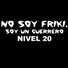

De: La Frikipedia, la enciclopedia extremadamente seria.
De: La Frikipedia, la enciclopedia extremadamente seria. De: La Frikipedia, la enciclopedia extremadamente seria.
|  | Este usuario no es Friki... Es un Guerrero Nivel 20 |
Para usar esta plantilla no copies el código, simplemente escribe {{Frikibox/No soy friki}}.
Autor(es):